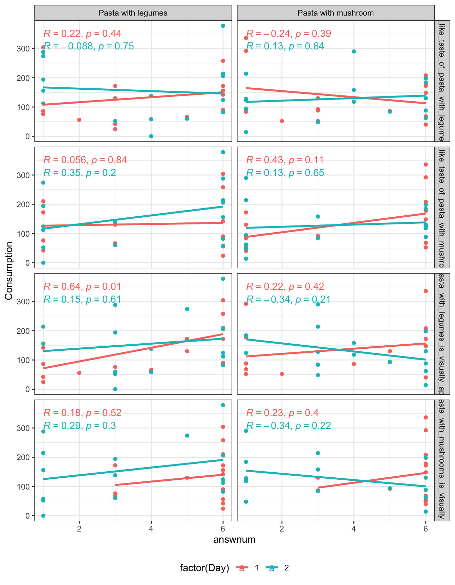

Chapter 7 Introduction to linear and mixed models
7.1 What is a linear model?
Linear models are on of the most used statistical methods. It consists of a wide range of models including regression, multiple-regression, ANalysis Of Variance (ANOVA) type models etc. The definition is that the response is linear in the parameters. If \(y\) is the response, and \(x\) is the predictor, then both of the models below is linear models
\[y = a + b\cdot x + e\]
\[y = a + b\cdot x + c\cdot x^2 + e\] Here you see that the response is linear in the parameters \(a,b,c\). I.e. it has nothing to do with being linear in the predictor.
7.2 Normal and Mixed models
7.2.1 Normal model
In a normal linear model such as:
\[y = a + b\cdot x + e\]
The assumption is that the uncertainty is captured by one entry, namely the residuals (\(e\)). For instance, the relation between Hunger and the intake AdLibg of dishes with Capsaicin can be visualized and modelled by:
library(data4consumerscience)
data(chili)
x <- chili %>%
# only include a single treatment
filter(Treatment=='Capsaicin') %>%
# only include the first trial for each judge
filter(!duplicated(Judge))
ggplot(data = x, aes(x = Hunger, y = AdLibg)) +
geom_point() +
stat_smooth(method = lm, se = F)
Naturally, the more hungry, the higher the intake.
A model describing this relation:
mdl <- lm(data = x, AdLibg~Hunger)
summary(mdl)##
## Call:
## lm(formula = AdLibg ~ Hunger, data = x)
##
## Residuals:
## Min 1Q Median 3Q Max
## -347.34 -106.69 -18.06 133.88 341.60
##
## Coefficients:
## Estimate Std. Error t value Pr(>|t|)
## (Intercept) 379.826 73.814 5.146 2.56e-05 ***
## Hunger 3.447 1.078 3.196 0.00375 **
## ---
## Signif. codes: 0 '***' 0.001 '**' 0.01 '*' 0.05 '.' 0.1 ' ' 1
##
## Residual standard error: 190.5 on 25 degrees of freedom
## Multiple R-squared: 0.2901, Adjusted R-squared: 0.2617
## F-statistic: 10.21 on 1 and 25 DF, p-value: 0.003753Here we see that consumption increases by \(3.45g\) per increase in \(1\) hunger scale, and that this slope has a standard error of \(1.08g\). Further, at Hunger=0 the intake is \(379.8g\). Furhter, we see that this relation is significant \(p = 0.0036\).
More details on the use of linear models in R and how-to can be viewed in these videos:
7.2.2 Mixed model
A mixed model refers to the situation, where more than one part of the model is handling the uncertainty. For instance, in the chili data set there are two instances for each judge, and hence the uncertainty can be split into between judges and within judged.
In this plot the intake is shown across products (Treatment) and labelled with the Judge number. For instance, Judge 1 is in general high and 24 generally low. Further, the plot is splitted according to the two test-repetition (First: TestDays = 1,..,5, Second: TestDays = 6,..,10).
This structure is encoded in the modelling.
ggplot(data = chili, aes(x = Hunger, y = AdLibg, color = Treatment, label = Judge)) +
geom_text() +
stat_smooth(method = lm, se = F) +
facet_wrap(~TestDay>5)
library(lme4)
library(lmerTest)
chili$TestDay2 <- factor(chili$TestDay>5) # adding a new testday variable
mdlmix <- lmer(data = chili, AdLibg ~ Hunger*Treatment + (1|Judge) + (1|(TestDay2)))
summary(mdlmix)## Linear mixed model fit by REML. t-tests use Satterthwaite's method [
## lmerModLmerTest]
## Formula: AdLibg ~ Hunger * Treatment + (1 | Judge) + (1 | (TestDay2))
## Data: chili
##
## REML criterion at convergence: 3407.9
##
## Scaled residuals:
## Min 1Q Median 3Q Max
## -2.78687 -0.60988 0.01365 0.51858 2.85224
##
## Random effects:
## Groups Name Variance Std.Dev.
## Judge (Intercept) 27011 164.35
## (TestDay2) (Intercept) 2974 54.53
## Residual 16870 129.89
## Number of obs: 269, groups: Judge, 27; (TestDay2), 2
##
## Fixed effects:
## Estimate Std. Error df t value
## (Intercept) 333.5070 61.2553 5.7430 5.445
## Hunger 3.4623 0.5275 234.6780 6.563
## TreatmentGreen tea 24.6601 48.7038 232.5864 0.506
## TreatmentCH19 7.4752 52.0134 232.7460 0.144
## TreatmentCapsaicin+ Green tea 1.0171 47.4588 232.8279 0.021
## Treatmentplacebo 60.7160 52.4670 232.8423 1.157
## Hunger:TreatmentGreen tea -0.8917 0.7131 232.8399 -1.250
## Hunger:TreatmentCH19 -0.4932 0.7326 233.1199 -0.673
## Hunger:TreatmentCapsaicin+ Green tea -0.8154 0.7053 233.2123 -1.156
## Hunger:Treatmentplacebo -0.4643 0.7379 233.0706 -0.629
## Pr(>|t|)
## (Intercept) 0.00184 **
## Hunger 3.34e-10 ***
## TreatmentGreen tea 0.61311
## TreatmentCH19 0.88585
## TreatmentCapsaicin+ Green tea 0.98292
## Treatmentplacebo 0.24837
## Hunger:TreatmentGreen tea 0.21240
## Hunger:TreatmentCH19 0.50153
## Hunger:TreatmentCapsaicin+ Green tea 0.24886
## Hunger:Treatmentplacebo 0.52986
## ---
## Signif. codes: 0 '***' 0.001 '**' 0.01 '*' 0.05 '.' 0.1 ' ' 1
##
## Correlation of Fixed Effects:
## (Intr) Hunger TrtmGt TrCH19 TrC+Gt Trtmnt Hn:TGt H:TCH1 H:TCGt
## Hunger -0.505
## TretmntGrnt -0.407 0.601
## TretmntCH19 -0.389 0.580 0.480
## TrtmntCp+Gt -0.423 0.627 0.529 0.502
## Tretmntplcb -0.378 0.557 0.473 0.448 0.494
## Hngr:TrtmGt 0.355 -0.701 -0.858 -0.419 -0.462 -0.410
## Hngr:TrCH19 0.355 -0.703 -0.433 -0.875 -0.455 -0.403 0.505
## Hngr:TrC+Gt 0.363 -0.718 -0.454 -0.432 -0.851 -0.425 0.529 0.521
## Hngr:Trtmnt 0.344 -0.680 -0.427 -0.407 -0.449 -0.879 0.497 0.490 0.515The summary spits out the model estimates, and especially the random effects shows that the within individual residual variation is \(130g\) while the between individual variation is larger: \(164g\). I.e. the consumption is more depend on the individual than the repetitions. Further, the testday also has a little effect (\(54g\)).
We can evaluate the systematic effect overall by anova
anova(mdlmix)## Type III Analysis of Variance Table with Satterthwaite's method
## Sum Sq Mean Sq NumDF DenDF F value Pr(>F)
## Hunger 2324398 2324398 1 239.00 137.7801 <2e-16 ***
## Treatment 31278 7820 4 232.75 0.4635 0.7625
## Hunger:Treatment 33035 8259 4 233.05 0.4895 0.7434
## ---
## Signif. codes: 0 '***' 0.001 '**' 0.01 '*' 0.05 '.' 0.1 ' ' 1This shows that Hunger indeed will make you eat more, but the slopes and offsets in relation to the different products is non-significant.
To learn more and see how to conduct the analysis in R, see here: More on ANOVA and mixed models